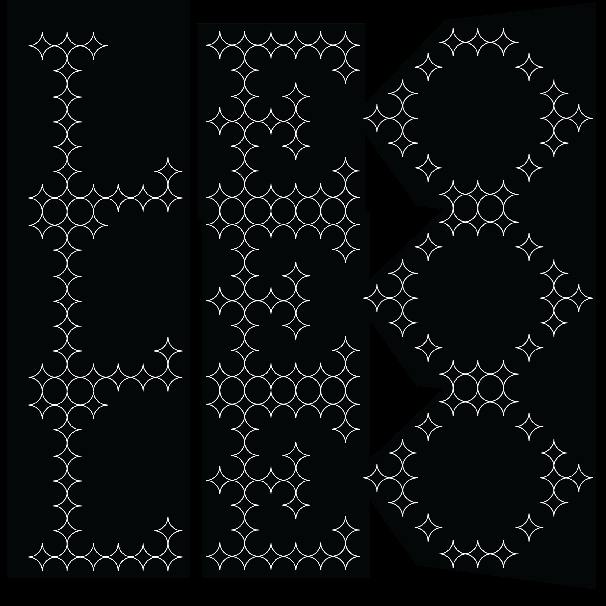
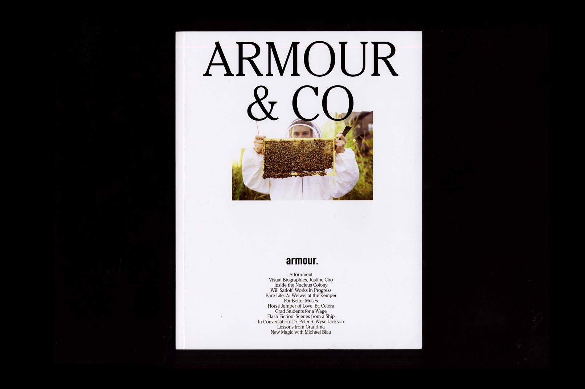
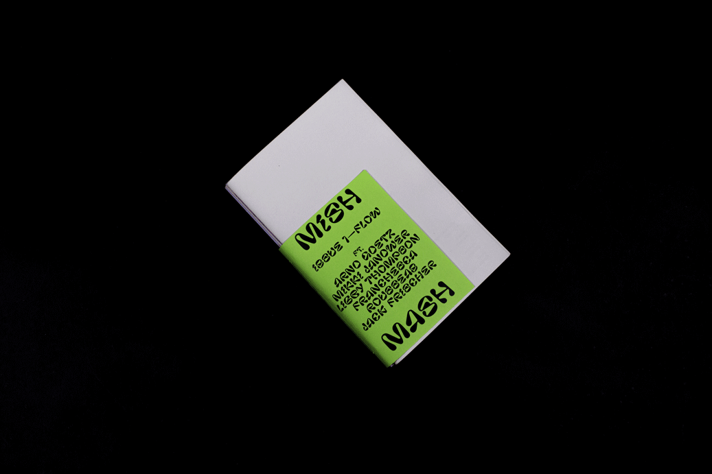

Book built around an episode of 99% invisible, which explores the crucial and expansive role that sand plays in our built civilization, and how that is at risk of falling apart. Supporting text surrounds the theme of overconsumption.
Book Design
Museo Stibbert

Visual identity for an unique museum in Florence, Italy, which is filled with a wide array of European, Asian and Middle Eastern armour.
Visual Identity
Astro

A starry web-based interactive typeface built with HTML, CSS, and Javascript.
Typeface Design & Website
Armour Issue 24

Editorial design and layout for Washington University’s culture and style publication. Issue 24 explores our local community in our inspiration, motivations, and daily lives.
Editorial Design
Mish Mash

Co-founded and designed a student collaborative zine that explores a new theme in each issue. The project is about revealing the beauty in the range of interpretations one can have on a given topic, and highlighting and giving space to the incredible talent that exists within our community.
Layout & Project Management